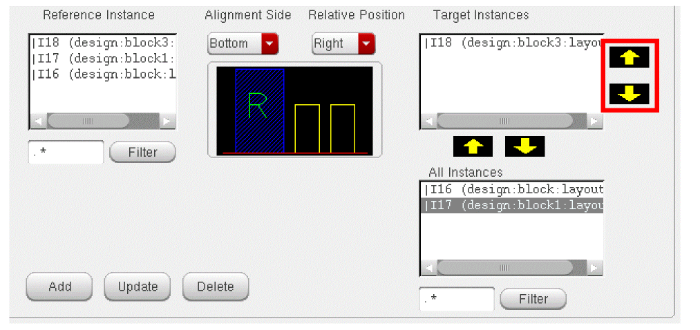

5
Placing Blocks
The Floorplan -> Block Placer command enables you to automatically place all hard and soft blocks in a design and minimize the wire length and chip area.
Block placer runs on the entire design. Before you run block placer, ensure that the design has a PRBoundary and at least one soft or hard block. The command can adjust soft blocks within the specified width and height range to maximize chip density.
Block placer supports both top-level and block-level rectilinear design boundaries.
The following table lists the cellTypes on which block placer operates. For information on how to set the cellType, refer to the Setting the Cell Type section.
| Blocks | Celltype |
|---|---|
The following table mentions block snapping with respect to the block type.
| Block Type | Edge Snapping | |
Block placer moves the macros (hard blocks and soft blocks) with the following placement status:
Block placer does not alter the position and dimensions of macros with the following status:
The following table lists the placement status of blocks before and after block placement.
| Placement status before Block Placement | Placement status after Block Placement |
|---|---|
When block placer is invoked on a design, it reads the constraints specified in the Constraint Manager. You can also specify additional constraints in the Block Placer form. Block placer tries to respect these constraints at all times.
Block placer also takes into account the blockages in a design and does not place blocks on blockages. Block placer treats pre-routes as blockages, and therefore does not place blocks on pre-routes. Also, the top-level pins having the status as Fixed, Placed, and Locked are treated as blockages, and therefore does not place blocks on such pins.
During block placement, Block placer ignores the connectivity information of standard cells that are outside the PRBoundary. Block placer does not check for overlaps between blocks and pins during placement.
The block placer menu has the following options:
Place Blocks
To invoke block placer, click Floorplan -> Block Placer -> Place Blocks. The Block Placer form is displayed.
The Block Placer form has the following tabs:
General
The general tab has the following sections that you can use to place blocks:
Chip Dimensions
The Chip Dimensions section has the following options:
-
Fixed Die — Select this option to specify that block placer cannot alter the chip dimensions. This option is selected by default if Boundary Area constraint is unavailable in the design. However, if Boundary Area constraint is available, the Fixed Die option is deselected. The block placer runs in the variable die mode and can alter the chip dimensions, if required, to place the blocks.
Block placer will always run in Fixed Die mode if any of the following is true:- Design boundary is rectilinear in shape
- The coreBoxSpec or IOBox attributes of PRBoundary are present
- Design contains IO rows
If the Fixed Die option is selected, the Specify Chip Dimension Range option is not available.
The value you specify in this field is retained when you restart block placer.
Minimum I/O to Core Distance — Specify the distance between the IOBox and the coreBox (the spacing between the pads and the blocks). The default value is the maximum value of minSpacings of routing layers across all layer purposes. This option is available only when there are IO pads in the design. The value you specify in this field is retained when you restart block placer.
Minimum Boundary to Instance Distance — This option is available only when there are no IO pads in the design and takes the top-level rectilinear boundary into account. Specify the minimum distance between the design boundary and instance edge in the Minimum Boundary to Instance Distance field. The default value is the sum of the maximum value of minSpacings of routing layers across all layer purposes and the largest pin size in the design. The block placer retains the value you specify in this field when you restart block placer in the same Virtuoso session. - Specify Chip Dimension Range — This option is available only if the Fixed Die option is not selected. You can specify the method that you want to use to define the dimensions of the chip by using the following options:
If you want to specify the width and the height range of the chip, select the Width and Height option button. Selecting the Width and Height option, activates the following options:
PRBoundary Width Range — You specify the minimum and maximum width of the chip in this field. The initial value is populated from the values specified in the areaBoundary constraint in Constraint Manager. This field is available only if the Fixed Die option is not selected. The values you specify in this field are retained when you restart block placer.
PRBoundary Height Range — You specify the minimum and maximum height of the chip in this field. The initial value is populated from the values specified in the areaBoundary constraint in Constraint Manager. This field is available only if the Fixed Die option is not selected. The values you specify in this field are retained when you restart block placer.
If you want to specify the area and aspect ratio of the chip, select the Area and Aspect Ratio option button. Selecting the Area and Aspect Ratio option button changes the form to display the following options:
-
PRBoundary Area Range — Specify the minimum and maximum area for the design boundary. The initial value is populated from the values specified in the areaBoundary constraint in Constraint Manager. This field is available only if the Fixed Die option is not selected.
The area range is calculated from the boundaryArea constraint as follows:
minimum area = minimum width * minimum height
maximum area = maximum width * maximum height
The values you specify in this field are retained when you restart block placer. -
PRBoundary Aspect Ratio (W/H) Range — Specify the minimum and maximum aspect ratio for the design boundary. The initial value is populated from the values specified in the areaBoundary constraint in Constraint Manager.This field is available only if the Fixed Die option is not selected.
The aspect ratio range is calculated from the boundaryArea constraint as follows:
minimum aspect ratio = minimum width / maximum height
maximum aspect ratio = maximum width / minimum height
The values you specify in this field are retained when you restart block placer.
Cost Order
Block placer uses the cost order field while minimizing cost. The cost with the highest priority is minimized first. The following table lists the default order from highest to lowest priority and describes each priority.
You can modify the cost order priority by using the arrow keys. You can also reload the default cost order priority by clicking the Default Cost Order button as shown in the graphic.
Options
The Options section offers the following options:
-
Default Minimum Distance between Instances — You can specify the default minimum distance between the instances in this field by specifying the value in the User Defined field. You can also override this value for any instance pair through the constraints tab (described later). The default value, which is used when you select the Pins per Side option, is calculated by using the following formula:
spacing = [total number of pins/number of sides of block] X [max ofminWidthof layer across all layer purposes + max ofminSpacingacross all layer purposes]
The value you specify in this field is retained when you restart block placer. -
Optimize Top-Level Pins — Select this option if you want block placer to optimize the top-level pins after block placement. However, the soft block pins will not be optimized. The value you specify in this field is retained when you restart block placer.
When block placer is run on variable die mode, the top-level pins are made floating. However, if the Optimize Top-Level Pins option is selected, the pins are placed accordingly.When the Optimize Top-Level Pins option is selected, Block placer will not consider the top-level pins with Placed status as blockages. However, if the Optimize Top-Level Pins option is not selected, then the top-level pins with Placed status are considered as routing blockages and allows the block placer to place blocks and avoid shorts with already placed pins. - Effort — You can specify the effort that block placer should make before arriving at the possible solutions. The minimum allowed value is 1 (least effort) and maximum allowed value is 5 (maximum effort). The default value is 3.
- Number of Solutions — Block placer can generate multiple solutions in a single execution. You use this field to specify the number of solutions that you want block placer to generate. The minimum allowed value is 1 and maximum value is 5, which also provides the best results. The default value is 3. By default, block placer loads the best solution. For more information, refer to the Load Solutions section.
-
Enable Multi Threading — Selecting this option reduces the time taken by the block placer to place a large number of macros.
-
Enable Congestion Based Refinement — In Virtuoso Space-based Router, Global Route replaces all opens with global routes and re-routes to reduce congestion. The Enable Congestion Based Refinement checkbox is enabled only if congestion data is available. When this field is enabled, the congestion value is taken into account during block placement. You can specify the congestion threshold value in the Congestion Value field. For example, if you specify the threshold value as 80, block placer will try to reduce the congestion in all areas in the design that have a congestion above 80 percent.If you are placing blocks in the congestion based refinement mode, you should also optimize the top-level pins for optimum results. If you do not optimize the top-level pins while running block placer in the congestion based refinement mode, a message is displayed in the CIW. Fixed pins at the top level are not moved when you optimize the top-level pins.
- Number of Iterations — You use the Number of Iterations field to specify the maximum number of iterations that can be performed between the congestion-based refinement block placer and the Global Router to bring congestion within the limits. The congestion limit is specified in the Congestion Value field. Specifying the number of iterations will improve the quality of congestion based refinement block placer and reach satisfactory congestion level. By default, the Number of Iterations option is disabled. This option is only enabled when Enable Congestion Based Refinement field is selected.
Constraints
You use the Constraints tab of the Block Placer form to specify the constraints that you want block placer to use to converge on a solution. As described previously, the initial values in the Constraints tab are populated from the values specified in the Constraint Manager. You use the Constraints tab to modify the displayed values. However, the values you specify must not conflict with the constraint values in the Constraint Manager. In addition, you can add constraints in this tab.
The Constraints tab has the following sub-tabs, as shown in the graphic:
Soft Block Constraints
The table in the Soft Block Size Constraints section lists all the soft blocks — rectangular and rectilinear — in the design cellview. The various fields in the table are:
- Library, Cell Name, and View Name — These are read-only fields that depict the library, cell name and view name of the soft block.
-
Resize — The value in the Resize field for a soft block indicates if block placer can modify the boundary of the soft block. The default value is False.
If you modify the Resize field for a rectilinear soft block to True, block placer resizes the soft block, converts it to a rectangular soft block, and displays an appropriate message for soft block resize in the log file. -
Area, Minimum AR, and Maximum AR — You use these fields to specify the area, minimum aspect ratio, and maximum aspect ratio for a soft block. Block placer uses the aspect ratio range to resize a block only if the Resize field is set to True.
If the Area, Minimum AR, and Maximum AR fields for a soft block are empty, it means no corresponding constraints exist. In this case, block placer resizes the soft block without any aspect ratio constraint to optimize space.
To specify the side constraints for soft blocks, perform the following steps:
-
Select the row for the soft block that you want to modify.
The Area, Minimum AR, and Maximum AR fields below the table show the values for the specified soft block. - Modify the values in the Area, Minimum AR, and Maximum AR fields. The valid values are positive numbers, AS IS, and empty field. If a field value is AS IS, then the corresponding value in the table is not updated.
-
Click the Update Selected button to apply the changes to the selected soft block as shown in the graphic.
You can also update multiple soft blocks simultaneously by selecting the corresponding rows. If you select multiple rows, the Area, Minimum AR, and Maximum AR fields display the values if they are same for all the selected soft blocks, else it displays AS IS as shown in the graphic.
To update multiple rows, select the rows and perform the steps 2 and 3 given above. When you click the Update Selected button, all the selected rows are updated with the new values. To update all rows, click Update All.
You can modify the Area, Minimum AR, and Maximum AR values within the limits specified using the minWidth, maxWidth, minHeight, and maxHeight parameters of the Boundary Area constraint in Constraint Manager. If the values you specify violates the Boundary Area constraint, a warning message is displayed in the CIW.
For example, consider a soft block that has the following parameters of the Boundary Area constraint specified in the Constraint Manager:
minWidth = 50
maxWidth = 200
minHeight = 20
maxHeight = 100
In the above example, the minimum aspect ratio = MinWidth/MaxHeight = 50/100 = 0.5 and the maximum aspect ratio = MaxWidth/MinHeight = 200/20 = 10.
If the values you specify in the Minimum AR and Maximum AR fields do not fall with in the minimum and maximum aspect ratio as calculated above, the values specified in the Constraint Manager are loaded in the Minimum AR and Maximum AR fields.
Instance Constraints
The Instance Constraints tab has the following sections as shown in the graphic:
Instance to Instance Edge Distance
You use the Instance To Instance Edge Distance section to specify the distance constraints between any two instances. This section has the following fields:
- Instance to Instance Distance — This table is populated from the Instance to Instance Distance constraints present in the Constraint Manager.
-
Instance1 and Instance2 — You use the Instance1 and Instance2 fields to specify the instance names on which the minimum and maximum distance constraint will be applied.
Instance1 and Instance2 fields list all the instances in the design. - Minimum and Maximum — The Minimum and Maximum fields specify the edge-to-edge distance values.
If a distance constraint exists in the Constraint Manager, you can modify the minimum and maximum distance values between two instances within the limits specified in the Constraint Manager.
For example, if the distance constraint between two instances Instance1 and Instance2 in the Constraint Manager are specified as 20 and 60, you can specify the minimum and maximum distance values between 20 and 60. This means that the minimum distance that you specify should not be less than 20 units and the maximum distance should not be more than 60 units. The table below lists some of the possible incorrect values.
If the values you specify violates the distance constraint in the Constraint Manager, a warning message is displayed in the CIW. In addition, if you specify only the minimum value, the maximum distance will be equal to the maximum width and height of the chip. Similarly, if you specify only the maximum value, the minimum distance will be zero.
To add a constraint, perform the following steps:
- Select the instances Instance1 and Instance2 between which you want to specify the distance constraint.
- Specify the minimum and the maximum distance in the Minimum and Maximum fields.
-
Click the Add button.
The new constraint gets added. However, if the Minimum and Maximum fields are empty, the new constraint is not added and an appropriate warning message will be displayed.
To modify a constraint, perform the following steps:
-
To update a constraint, you need to first select a constraint. However, if a constraint is not selected, an appropriate warning message will be displayed. Select the row that lists the constraint in the table.
The Minimum and Maximum fields display the minimum and maximum distance values as shown in the graphic.
- Enter the new values for the minimum and maximum distance in the Minimum and Maximum fields.
-
Click the Update button.
The values are updated.
You can also select multiple constraints and update them simultaneously. If you select multiple rows, Minimum and Maximum fields display the values if they are same, else it displays AS IS as shown in the graphic below.
To delete a constraint, perform the following steps:
- Select the row(s) that lists the constraint in the table
-
Click the Delete button.
You can also select multiple constraints and delete them simultaneously.
You can also reload the constraint values in the Constraint Manager by using the Reload Constraints from Constraint Manager button. Only the constraints coming from the Constraint Manager are reloaded. The other additional constraints added in the GUI remain.
Instance to Boundary Distance Constraints
You use the Instance To Boundary Distance Constraints section to specify the distance constraints between an instance and the design boundary. This section has the following fields:
- Instance to Boundary Distance Table — This table lists all the Instance to Boundary Distance constraints present in the Constraint Manager.
- Instance Name — The Instance Name field shows the names of all the instances in the design.
- Minimum Distance and Maximum Distance — The Minimum Distance and Maximum Distance fields show the minimum and maximum distance of the instance from the design boundary. The initial values of Minimum Distance and Maximum Distance are populated from the Distance constraint in the Constraint Manager.
- Boundary Edge — The Boundary Edge field shows the edge of the boundary to which the distance is calculated. The valid values are Left, Right, Top, and Bottom.
- Filter — The Filter field enables you to filter the instances in the Instance Name list box.
You can add, modify, and delete the values of the instance to boundary constraints using this section. You can also reload the values in the Constraint Manager by using the Reload Constraints from Constraint Manager button. Only the constraints populated from the Constraint Manager are reloaded. The other additional constraints added in the form remain.
To add a constraint, perform the following steps:
- Select the instance from the Instance Name list box.
-
Specify the minimum and maximum distance in the Minimum Distance and Maximum Distance fields as shown in the graphic.
- Specify the edge to which the constraint should be applied in the Boundary Edge list box.
-
Click the Add button.
The constraint is added. However, if the Minimum and Maximum fields are empty, the new constraint is not added and an appropriate warning message will be displayed.
To modify a constraint, perform the following steps:
-
To update a constraint, you need to first select a constraint. However, if a constraint is not selected, an appropriate warning message will be displayed.Select the instance from the table.
The minimum and maximum distance from the design boundary, if specified in the Constraint Manager, is shown in the Minimum Distance and Maximum Distance fields. -
Type the minimum and maximum distance in the Minimum Distance and Maximum Distance fields as shown in the graphic.
-
Click the Update button.
The instance is updated.
You can also select multiple constraints and update them simultaneously. If you select multiple rows, Minimum Distance, Maximum Distance, and Boundary Edge fields display the values if they are same, else it displays AS IS as shown in the graphic.

To delete a constraint, perform the following steps:
- Select the constraint(s) from the table
-
Click the Delete button.
You can also select multiple constraints and delete them simultaneously.
Relative Constraints
Block placer respects the order and alignment constraints for blocks specified in the table in the Order/Alignment section.
The order and alignment constraints use the following parameters:
- Reference instance — The instance that is used as the reference while determining the alignment side.
- Target instance — The instance that is aligned with the reference instance.
- Alignment side — The edge of the reference instance on which the target instance will be aligned.
- Relative position — The relative position of the target instance with respect to the reference instance.
For example, consider the following order and alignment constraint:
| Parameter | Value |
|---|---|
In this case, the placement of the blocks will be as follows:
This is because block1 is the reference block and the top edge of block1 is aligned with the top edge of block4, block2, and block6. The target blocks are placed in the specified order on the right side of the reference block because the relative position parameter is set to right.
Consider another constraint as given in the following table:
| Parameter | Value |
|---|---|
In this case, the placement of the blocks will be as follows:
In this case, the target blocks are placed in the specified order on the left side of the reference block. This is because the relative position parameter is set to left.
However, if you do not specify any value for the relative position parameter, the target blocks are placed either on the left or right of the reference block depending on the available space
The Relative Constraints tab is shown in the graphic.
The various controls in this tab are as follows:
- Order/Alignment — This table is initially populated with all the existing Alignment constraints present in the Constraint Manager.
- Reference Instance — Lists all the instances in the cellview. You can select only one instance from this field to add and update a constraint. If you select a row in the constraints table, the corresponding reference instance value is highlighted in this field.
- Alignment Side — Lists the possible edges of an instance to be used for alignment. The possible values are “Left”, “Right”, “Top” and “Bottom”. If you select a row in the constraints table, the corresponding alignment side is highlighted in this field.
-
Relative Position — Lists the possible relative positions of the target instance with respect to the reference instance. If you do not want to specify a relative position, you can specify the values as None.
If you select a row in the table, the corresponding relative position value is highlighted in the Relative Position field. However, if you select multiple rows, the Update field is grayed out.
The following table lists the various alignment sides and the corresponding possible relative positions.
Alignment Side Possible Relative Position
For example, if you specify the alignment side as Left, then the target instances can be placed either on top or bottom of the reference instance. You can specify top or bottom by using the Relative Position field.
The graphic below the Alignment Side and Relative Position fields shows how the target and the reference instances will be placed based on the specified settings. -
Target Instances — Lists all the blocks that will be aligned with the reference block and the order in which they will be aligned. You can specify the order in which the blocks should be aligned by using the arrow buttons on the right of this field as shown in the graphic.
Clicking the up arrow button places the blocks closer to the referenced instance. Similarly, clicking the down arrow button places the blocks away from the referenced instance.
You can also remove the instances from the constraint by moving them to the All Instances box. You can also add target instances by selecting an instance from the All Instances box and using the up arrow button placed above the All Instances box.
If you select a row in the table, the corresponding target instances are highlighted in the Target Instances field. However, if you select multiple rows, Update field is grayed out. - All Instances — Lists all the instances in the design except the fixed and locked instances. You can select multiple instances in this field and move them to the Target Instances field by using the up arrow button.
You can add, modify, and delete constraints using this form.
To add a constraint, perform the following steps:
- Select the reference instance from the Reference Instance field.
- Specify the side in the Alignment Side drop down list.
- Specify the position in the Relative Position drop down list.
-
Specify the target instance by moving an instance from the All Instances list box to the Target Instance list box as shown in the graphic.
- Adjust the order of Target Instances using the arrow keys next to the field.
-
Click Add.
The constraint is added.
To update a constraint, perform the following steps:
-
Select the constraint in the constraints table.
The corresponding reference instance, side, position, and target instances are displayed in the Reference Instance, Alignment Side, Relative Position, and Target Instance fields. -
Modify the values in the Alignment Side, Relative Position, and Target Instance list box as shown in the graphic.
- Click Update.
The constraint is updated. While updating a constraint, if you specify a value that violates the values in the Constraint Manager, a warning message is displayed in the CIW and the previous values are restored.
To delete a constraint, perform the following steps:
After block placer is run on the entire design, click OK in the Block Placer form. A summary report of the placement of all hard and soft blocks in the design is displayed in the CIW as shown in the following figure.

Load Solutions
By default, block placer loads the best solution among the solutions it generates. You can also load the other solutions that block placer generates. To load a solution, click Floorplan -> Block Place -> Load Solution command. The Load Solutions form is displayed as shown in the following figure.
The load solution command reads the number of solutions present for a design in the directory specified by BPDIR variable (or bpLogs directory within the testcase directory) and lists the number of solutions in the Load Solution Number field in the form. You can select a solution number in the field and load it. You can undo the changes made by the new solution by using the Undo command. When you undo the changes, block placer restores the previous state.
Once you have selected the solution number, click OK to load it. A summary report of loading the solution is displayed in CIW as shown in the following figure.

Report Placement Statistics
Use the Floorplan – Block Place – Report Placement Statistics option to view the placement statistics report at any time after block placement.
Typically, after running the block placer, you may want to make minor manual adjustments or automated adjustments such as using the Soft Block Update commands to remove overlaps or pulling blocks inside boundary. After making the adjustments, use the Floorplan > Block Place > Report Placement Statistics option to display the placement report in the CIW. You can use the placement report to review the placement statistics and analyze the results.

Return to top